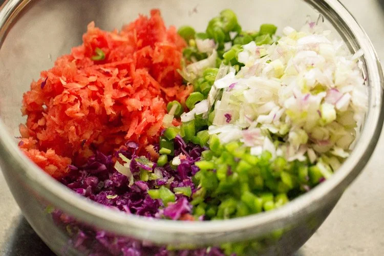
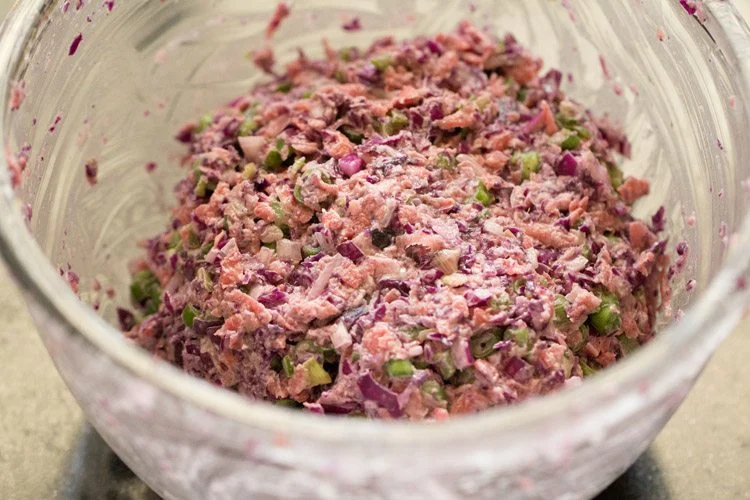
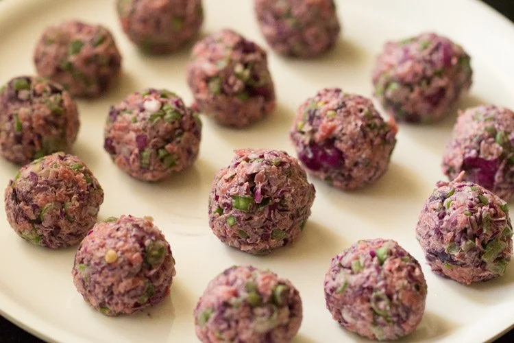
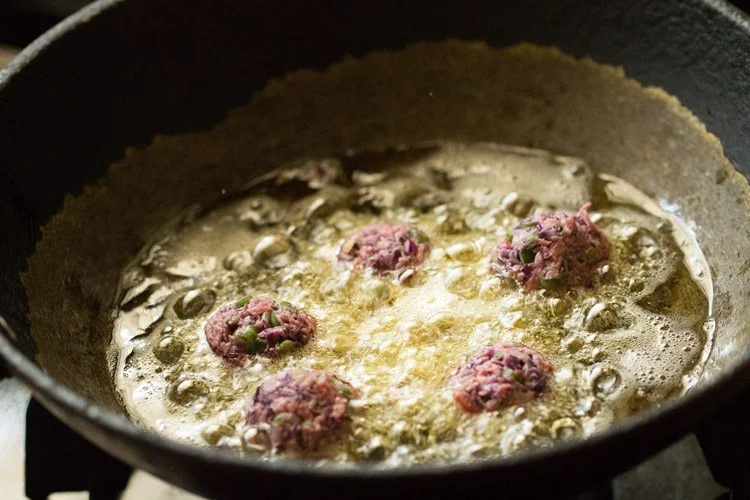
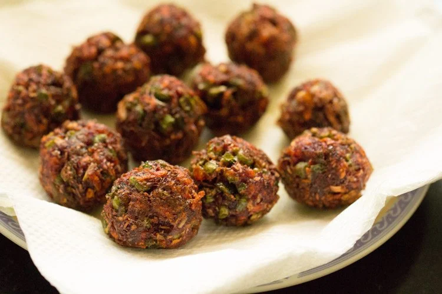
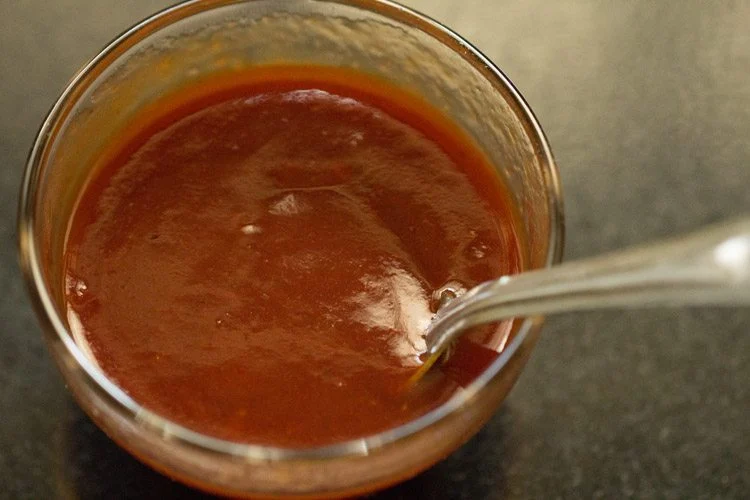
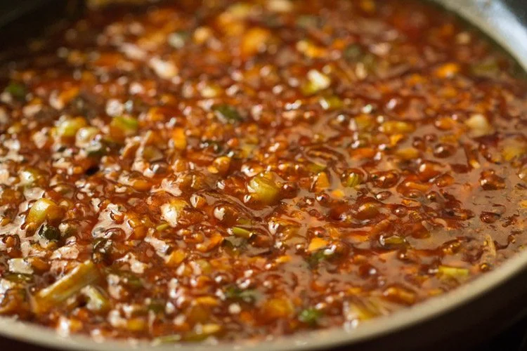
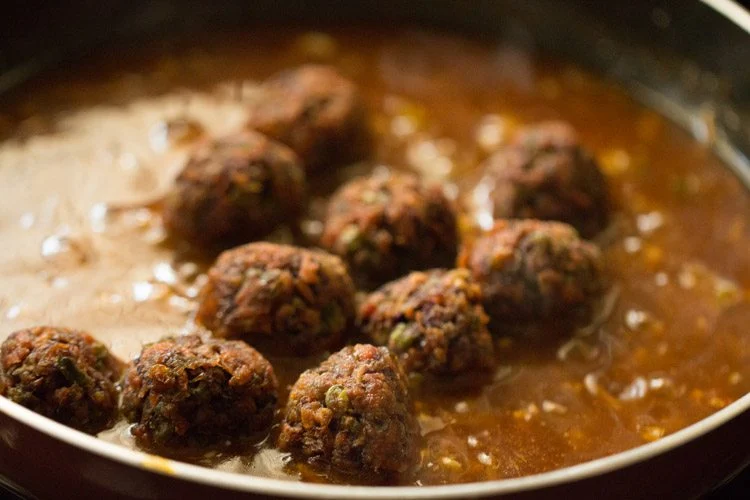

1. Take the finely chopped or grated veggies in a bowl. You will need the
below listed vegetables:
½ cup finely chopped red cabbage
½ cup grated carrot
¼ cup finely chopped capsicum (green bell pepper)
¼ cup finely chopped French beans
¼ cup finely chopped spring onions
You can also add regular green cabbage, instead of red or purple
cabbage.

2. Next, add the the following dry ingredients to the mixed vegetables
2 tablespoons cornstarch (called cornflour in India and UK)
2 tablespoons all-purpose flour
½ teaspoon black pepper powder
½ teaspoon salt or as required
3. Mix to bring the whole mixture together. Then, kind of mix and knead so
that the veggies leave moisture and you get a dough-like mixture.
But do not knead like that a bread or roti dough. Gluten strands can form
that will result in a dense, chewy texture in the fried Manchurian
balls.
Thus, only mix very well and press so that the veggies release their
juices.

4. Then, take a small portion of the mixture in your hands.
5. Press and roll it in your palm and make a round ball.
6. Make all vegetable balls this way and keep aside. You can spread some oil on your palms while making the vegetable balls.
7. Heat oil for deep frying in a kadai or pan. Add a small piece of veggie ball in the hot oil. If the ball does not stick or settle down at the bottom of the pan, but comes up steadily, the oil is ready for frying the balls. In case the balls break, then some more binding agent is required. So, you can add 2 to 3 teaspoons more of all-purpose flour (maida).

8. Gently place the balls in the hot oil. The oil has to be medium hot. Too much heat and the Manchurian balls will be browned from the top and uncooked from the inside. Less hot oil will make the balls absorb too much oil.
9. When cooked from one side and light golden or golden, turn the balls with a slotted spoon.
10. Fry the balls till crisp and golden, turning them over a couple of times. Remove them with a slotted or perforated spoon and drain as much oil as possible.

11. Place the fried vegetable balls on a kitchen paper towel. For a low-fat version, you can cook the veggie balls in an appe or appam pan. Fry the veg balls this way in batches and set aside.
12. In a small bowl, take the following sauces: ½ tablespoon soy sauce (or 1.5 teaspoons soy sauce) 1 tablespoon tomato ketchup 2 to 3 teaspoons of red chili sauce (note that the red chilli sauce is spicy and not sweet)
13. Mix the sauces thoroughly to an even mixture and set aside.
14. In another small bowl, take 1 tablespoon cornstarch (cornflour) and 2 tablespoons water. Mix very well and keep aside.

15. Heat 1 to 1½ tablespoons oil in a pan or wok. Add the below ingredients one by one: 4 tablespoons chopped spring onions (scallions) 1 tablespoon finely chopped ginger 1 tablespoon finely chopped garlic 2 finely chopped green chilies ¼ cup finely chopped capsicum (green bell pepper) Adding capsicum is optional. You can use toasted sesame oil, sunflower oil or any neutral tasting oil.
16. Stir fry on medium heat until the onions turn translucent and are softened.
17. Now, add the prepared sauce mixture.
18. Stir and mix very well.
19. Add 1 to 1¼ cups water.
20. Let the mixture come to a boil.
21. Mix the cornstarch paste again in the bowl (as it settles at the bottom) and then add in the pan.

22. As soon as you add the cornstarch paste, mix very well so that there are no lumps.

23. Continue to stir and mix while the gravy is cooking. Simmer till the gravy thickens and you see a glaze in it. There should be no raw taste of the cornstarch in the sauce. Cooking sauce or gravy takes about 3 to 4 minutes on medium heat. If the sauce is too thick, then add some water. If it is too thin, then add some cornstarch paste.
24. When the gravy thickens, add ½ teaspoon black pepper powder
25. Season with a bit of salt. Keep in mind that the soy sauce, chili sauce and tomato ketchup already has salt in it. So, add less salt or as per your taste preferences.

26. Add ¼ to ½ teaspoon sugar or more, if required. Mix very well.
27. Next, add the fried vegetable balls and 1 teaspoon rice vinegar or regular vinegar or apple cider vinegar.

28. Gently stir and coat the fried vegetable balls with the gravy.
29. Turn off the heat and add chopped spring onion greens.
30. Serve Veg Manchurian hot garnished with some spring onion greens (scallion greens).